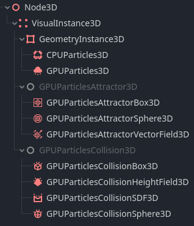

Hệ thống hạt (3D)
Phần này của bài hướng dẫn đề cập đến các hệ thống hạt (3D) được tăng tốc bằng GPU. Hầu hết nội dung ở đây cũng áp dụng cho hạt CPU.
Giới thiệu
Bạn có thể dùng hệ thống hạt để mô phỏng các hiệu ứng vật lý phức tạp như lửa, tia lửa, khói, hiệu ứng phép thuật và nhiều thứ khác. Chúng rất phù hợp để tạo hành vi động, tự nhiên và thêm "sức sống" cho scene của bạn.
Ý tưởng là một hạt được phát ra theo một khoảng thời gian cố định và có thời gian sống cố định. Trong suốt thời gian sống, mọi hạt đều có cùng hành vi cơ bản. Điều khiến mỗi hạt khác biệt với các hạt khác và tạo ra vẻ tự nhiên chính là tính ngẫu nhiên mà bạn có thể thêm vào hầu hết các tham số và hành vi của nó.
Mọi hệ thống hạt bạn tạo trong Godot đều gồm hai phần chính: hạt và emitter (bộ phát).
Hạt
Hạt là phần nhìn thấy được của một hệ thống hạt. Đó là những gì bạn thấy trên màn hình khi một hệ thống hạt đang hoạt động: những hạt bụi li ti, ngọn lửa của đám cháy, những quả cầu phát sáng của một hiệu ứng phép thuật. Một hệ thống có thể có từ vài trăm đến hàng chục nghìn hạt. Bạn có thể ngẫu nhiên hóa kích thước, tốc độ và hướng chuyển động của hạt, cũng như thay đổi màu của nó trong suốt thời gian sống. Khi nghĩ đến một đám lửa, bạn có thể coi tất cả những đốm than nhỏ bay ra từ đó là các hạt riêng lẻ.
Emitter
Emitter là thứ tạo ra hạt. Emitter thường không nhìn thấy được, nhưng chúng có thể có hình dạng. Hình dạng đó điều khiển vị trí và cách hạt được sinh ra, ví dụ chúng nên lấp đầy căn phòng như bụi hay bắn ra từ một điểm duy nhất như đài phun nước. Quay lại ví dụ đám lửa, emitter sẽ là sức nóng ở trung tâm đám lửa tạo ra những đốm than và ngọn lửa.
Tổng quan về node

Tất cả các node hạt 3D có trong Godot
Có hai loại hệ thống hạt 3D trong Godot: class_GPUParticles3D, được xử lý trên GPU, và class_CPUParticles3D, được xử lý trên CPU.
Hệ thống hạt CPU kém linh hoạt hơn so với phiên bản GPU, nhưng chúng hoạt động trên nhiều loại phần cứng hơn và hỗ trợ tốt hơn cho các thiết bị cũ và điện thoại di động. Vì được xử lý trên CPU, chúng không đạt hiệu năng bằng hệ thống hạt GPU và không thể kết xuất nhiều hạt riêng lẻ bằng. Ngoài ra, hiện tại chúng chưa có đầy đủ các tùy chọn điều khiển như hạt GPU.
Hệ thống hạt GPU chạy trên GPU và có thể kết xuất hàng trăm nghìn hạt trên phần cứng hiện đại. Bạn có thể viết shader hạt tùy chỉnh cho chúng, giúp chúng rất linh hoạt. Bạn cũng có thể khiến chúng tương tác với môi trường bằng các node attractor và node va chạm.
Có ba node attractor hạt: class_GPUParticlesAttractorBox3D, class_GPUParticlesAttractorSphere3D và class_GPUParticlesAttractorVectorField3D. Node attractor tác dụng một lực lên mọi hạt trong phạm vi của nó và kéo chúng lại gần hoặc đẩy chúng ra xa tùy theo hướng của lực đó.
Có một số node va chạm hạt. class_GPUParticlesCollisionBox3D và class_GPUParticlesCollisionSphere3D là các node đơn giản. Bạn có thể dùng chúng để tạo các hình dạng cơ bản như hộp, sàn hoặc tường mà hạt va chạm vào. Hai node còn lại cung cấp hành vi va chạm phức tạp hơn. class_GPUParticlesCollisionSDF3D hữu ích khi bạn muốn scene trong nhà va chạm với hạt mà không phải tự tay tạo từng collider hộp và cầu. Nếu muốn hạt va chạm với các scene ngoài trời rộng lớn, bạn sẽ dùng node class_GPUParticlesCollisionHeightField3D. Nó tạo ra một heightmap của thế giới và các đối tượng trong đó, rồi dùng nó cho va chạm hạt quy mô lớn.